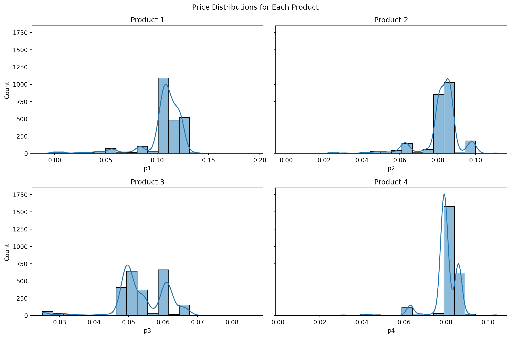
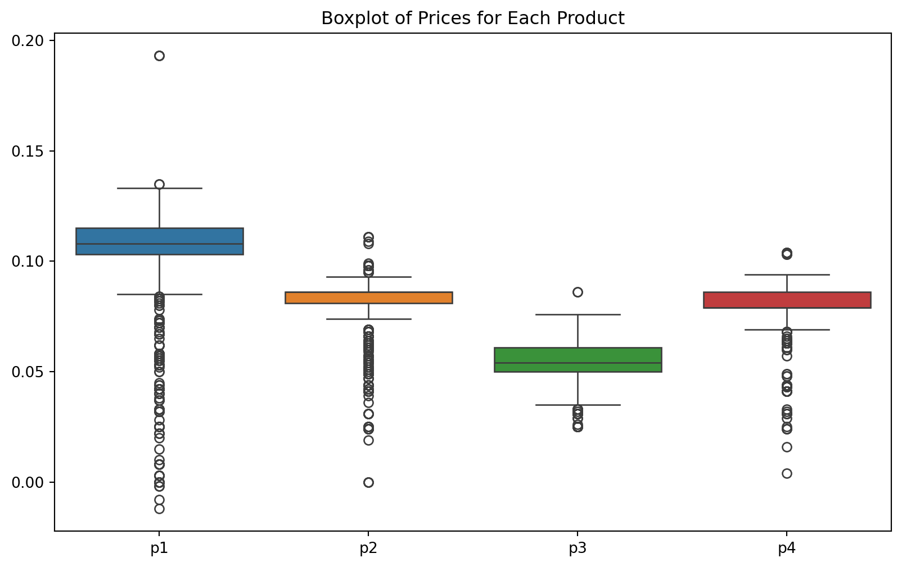

This assignment uses the Multinomial logit (MNL) model to analyze (1) yogurt purchase data made by consumers at a retail location, and (2) conjoint data about consumer preferences for minivans.
1. Estimating Yogurt Preferences
Likelihood for the Multi-nomial Logit (MNL) Model
Suppose we have \(i=1,\ldots,n\) consumers who each select exactly one product \(j\) from a set of \(J\) products. The outcome variable is the identity of the product chosen \(y_i \in \{1, \ldots, J\}\) or equivalently a vector of \(J-1\) zeros and \(1\) one, where the \(1\) indicates the selected product. For example, if the third product was chosen out of 4 products, then either \(y=3\) or \(y=(0,0,1,0)\) depending on how we want to represent it. Suppose also that we have a vector of data on each product \(x_j\) (eg, size, price, etc.).
We model the consumer’s decision as the selection of the product that provides the most utility, and we’ll specify the utility function as a linear function of the product characteristics:
\[ U_{ij} = x_j'\beta + \epsilon_{ij} \]
where \(\epsilon_{ij}\) is an i.i.d. extreme value error term.
The choice of the i.i.d. extreme value error term leads to a closed-form expression for the probability that consumer \(i\) chooses product \(j\):
A clever way to write the individual likelihood function for consumer \(i\) is the product of the \(J\) probabilities, each raised to the power of an indicator variable (\(\delta_{ij}\)) that indicates the chosen product:
We will use the yogurt_data dataset, which provides anonymized consumer identifiers (id), a vector indicating the chosen product (y1:y4), a vector indicating if any products were “featured” in the store as a form of advertising (f1:f4), and the products’ prices (p1:p4). For example, consumer 1 purchased yogurt 4 at a price of 0.079/oz and none of the yogurts were featured/advertised at the time of consumer 1’s purchase. Consumers 2 through 7 each bought yogurt 2, etc.
Dataset
import pandas as pdimport numpy as np import matplotlib.pyplot as pltimport seaborn as snsfrom scipy.optimize import minimize# Import the data and show the first few rowsyogurt = pd.read_csv('./yogurt_data.csv')print(yogurt.head()) print(yogurt.describe())
price_columns = ['p1', 'p2', 'p3', 'p4']# Plot histograms for prices of each productfig, axes = plt.subplots(2, 2, figsize=(12, 8), sharey=True)fig.suptitle('Price Distributions for Each Product')sns.histplot(yogurt['p1'], bins=20, kde=True, ax=axes[0, 0])axes[0, 0].set_title('Product 1')sns.histplot(yogurt['p2'], bins=20, kde=True, ax=axes[0, 1])axes[0, 1].set_title('Product 2')sns.histplot(yogurt['p3'], bins=20, kde=True, ax=axes[1, 0])axes[1, 0].set_title('Product 3')sns.histplot(yogurt['p4'], bins=20, kde=True, ax=axes[1, 1])axes[1, 1].set_title('Product 4')plt.tight_layout()plt.show()# Plot boxplots for prices of each productplt.figure(figsize=(10, 6))sns.boxplot(data=yogurt[price_columns])plt.title('Boxplot of Prices for Each Product')plt.show()


Based on the plots, we can see that:
Consistency: Product 1 has the most consistent pricing, with prices mostly around $0.125.
Low Price Strategy: Product 3 generally has the lowest prices but shows more variability, possibly indicating different pricing tiers or promotional strategies.
Middle Ground: Products 2 and 4 have similar pricing strategies, both centered around $0.08, suggesting they might be positioned similarly in the market.
Outliers: The presence of lower-priced outliers across all products could indicate promotional pricing or discounts. Product 1 also has a higher outlier, suggesting occasional premium pricing.”
Data Preparation
Now, let the vector of product features include brand dummy variables for yogurts 1-3 (we’ll omit a dummy for product 4 to avoid multi-collinearity), a dummy variable to indicate if a yogurt was featured, and a continuous variable for the yogurts’ prices:
The “hard part” of the MNL likelihood function is organizing the data, as we need to keep track of 3 dimensions (consumer \(i\), covariate \(k\), and product \(j\)) instead of the typical 2 dimensions for cross-sectional regression models (consumer \(i\) and covariate \(k\)).
What we would like to do is reorganize the data from a “wide” shape with \(n\) rows and multiple columns for each covariate, to a “long” shape with \(n \times J\) rows and a single column for each covariate. As part of this re-organization, we’ll add binary variables to indicate the first 3 products; the variables for featured and price are included in the dataset and simply need to be “pivoted” or “melted” from wide to long.
# Melt the product choices, feature status, and prices in one steplong_yogurt = pd.wide_to_long(yogurt, stubnames=['y', 'f', 'p'], i='id', j='product', sep='', suffix='\\d+')# Reset index to get a tidy dataframelong_yogurt = long_yogurt.reset_index()# Rename the columns to match the desired formatlong_yogurt = long_yogurt.rename(columns={'y': 'choice', 'f': 'featured', 'p': 'price'})# Create dummy variables for the first three productslong_yogurt['yogurt_1'] = (long_yogurt['product'] ==1).astype(int)long_yogurt['yogurt_2'] = (long_yogurt['product'] ==2).astype(int)long_yogurt['yogurt_3'] = (long_yogurt['product'] ==3).astype(int)# Sort by 'id'long_yogurt = long_yogurt.sort_values(by=['id', 'product']).reset_index(drop=True)# Drop 'product' column long_yogurt = long_yogurt.drop(columns=['product'])long_yogurt
id
choice
featured
price
yogurt_1
yogurt_2
yogurt_3
0
1
0
0
0.108
1
0
0
1
1
0
0
0.081
0
1
0
2
1
0
0
0.061
0
0
1
3
1
1
0
0.079
0
0
0
4
2
0
0
0.108
1
0
0
...
...
...
...
...
...
...
...
9715
2429
1
0
0.086
0
0
0
9716
2430
0
0
0.108
1
0
0
9717
2430
0
0
0.086
0
1
0
9718
2430
0
0
0.043
0
0
1
9719
2430
1
0
0.079
0
0
0
9720 rows × 7 columns
Estimation
Define the log-likelihood function
# Define the log-likelihood functiondef log_likelihood(beta, X, y): Xbeta = np.dot(X, beta) exp_Xbeta = np.exp(Xbeta) log_likelihood = np.sum(y * Xbeta - np.log(1+ exp_Xbeta))return-log_likelihood# Define the function to calculate the gradientdef gradient(beta, X, y): Xbeta = np.dot(X, beta) exp_Xbeta = np.exp(Xbeta) prob = exp_Xbeta / (1+ exp_Xbeta) gradient = np.dot(X.T, y - prob)return-gradient
import statsmodels.api as sm# Combine the feature columns into a single matrix XX_mn = long_yogurt[['yogurt_1', 'yogurt_2', 'yogurt_3', 'featured', 'price']]# The dependent variable is the product choicey_mn = long_yogurt['choice']# Fit the multinomial logit model using statsmodelsX_mn = sm.add_constant(X_mn) # Add a constant term to the predictorsmodel = sm.MNLogit(y_mn, X_mn)result_mn = model.fit()# Display the summary of the modelresult_mn.summary()
Optimization terminated successfully.
Current function value: 0.477971
Iterations 7
MNLogit Regression Results
Dep. Variable:
choice
No. Observations:
9720
Model:
MNLogit
Df Residuals:
9714
Method:
MLE
Df Model:
5
Date:
Wed, 29 May 2024
Pseudo R-squ.:
0.1500
Time:
15:00:22
Log-Likelihood:
-4645.9
converged:
True
LL-Null:
-5465.9
Covariance Type:
nonrobust
LLR p-value:
0.000
choice=1
coef
std err
z
P>|z|
[0.025
0.975]
const
1.2830
0.173
7.420
0.000
0.944
1.622
yogurt_1
1.4179
0.089
16.008
0.000
1.244
1.591
yogurt_2
0.9013
0.065
13.909
0.000
0.774
1.028
yogurt_3
-3.1405
0.142
-22.072
0.000
-3.419
-2.862
featured
0.4714
0.119
3.959
0.000
0.238
0.705
price
-31.9761
2.089
-15.305
0.000
-36.071
-27.881
Result from manual calculation and MNlogit package calculation is the same.
Discussion
We learn…
Interpretation:
Intercept (const): 1.2830
The intercept represents the baseline log-odds of choosing a product when all predictor variables are zero. This is the reference level.
Yogurt Type Coefficients:
yogurt_1 (1.4179):
This positive coefficient indicates that yogurt brand 1 has a higher preference compared to the baseline (yogurt 4).
The exponentiated coefficient, exp(1.4179) ≈ 4.13, indicates that the odds of choosing yogurt brand 1 are about 4.13 times higher than the baseline choice.
yogurt_2 (0.9013):
This positive coefficient indicates that yogurt brand 2 also has a higher preference compared to the yogurt 4.
The exponentiated coefficient, exp(0.9013) ≈ 2.46, indicates that the odds of choosing yogurt brand 2 are about 2.46 times higher than the baseline choice.
yogurt_3 (-3.1405):
This negative coefficient indicates that yogurt brand 3 is less preferred compared to the yogurt 4.
The exponentiated coefficient, exp(-3.1405) ≈ 0.04, indicates that the odds of choosing yogurt brand 3 are about 0.04 times (or 96% less) than the baseline choice.
Price (-31.9761):
This large negative coefficient indicates that as the price of the yogurt increases, the likelihood of choosing that yogurt decreases significantly.
The exponentiated coefficient, exp(-31.9761) ≈ 0, shows a very strong aversion to higher prices.
Featured (0.4714):
This positive coefficient indicates that if a yogurt is featured, it has a higher preference compared to a non-featured yogurt.
The exponentiated coefficient, exp(0.4714) ≈ 1.60, indicates that the odds of choosing a featured yogurt are about 1.60 times higher than a non-featured yogurt.
Dollar Benefit Calculation
Next, use the estimated price coefficient as a dollar-per-util conversion factor to calculate the dollar benefit between the most-preferred yogurt and the least preferred yogurt.
Identify the coefficients for the most-preferred and least-preferred yogurts:
So, the dollar benefit between the most-preferred yogurt (Yogurt 1) and the least-preferred yogurt (Yogurt 3) is approximately $0.1426 per unit. This means that consumers value Yogurt 1 about $0.1426 more per unit than Yogurt 3.
Simulate Counterfactual
One benefit of the MNL model is that we can simulate counterfactuals (eg, what if the price of yogurt 1 was $0.10/oz instead of $0.08/oz).
# Predict choice probabilitiespredicted_probs = result_mn.predict(X_mn)# Calculate current market sharescurrent_market_shares = predicted_probs.mean(axis=0)print("Current Market Shares:")print(current_market_shares)# Increase the price of yogurt 1 by $0.10X_mn_new = X_mn.copy()X_mn_new.loc[long_yogurt['yogurt_1'] ==1, 'price'] +=0.10# Predict new choice probabilities with increased price for yogurt 1predicted_probs_new = result_mn.predict(X_mn_new)# Calculate new market sharesnew_market_shares = predicted_probs_new.mean(axis=0)print("New Market Shares after $0.10 price increase for Yogurt 1:")print(new_market_shares)# Check if the market share of yogurt 1 decreasedmarket_share_decrease = current_market_shares[1] - new_market_shares[1]print("Change in Market Share for Yogurt 1:")print(market_share_decrease)
Current Market Shares:
0 0.75
1 0.25
dtype: float64
New Market Shares after $0.10 price increase for Yogurt 1:
0 0.828349
1 0.171651
dtype: float64
Change in Market Share for Yogurt 1:
0.07834917598912244
The market share for yogurt 1 decreased by 0.0784 after the price increase. This indicates that the price sensitivity for yogurt 1 is significant, and consumers are likely to switch to other options when its price increases.
2. Estimating Minivan Preferences
Now let’s perform a conjoint analysis to estimate consumer preferences for different minivan attributes using a Multinomial Logit (MNL) model. The data consists of responses from a conjoint survey where respondents were presented with various minivan configurations and asked to choose their preferred option. The attributes considered in the analysis include the number of seats, cargo space, engine type, and price.
Data
minivan_data = pd.read_csv('./rintro-chapter13conjoint.csv')print(minivan_data.describe()) # Number of unique respondentsnum_respondents = minivan_data['resp.id'].nunique()# Average number of choice tasks per respondentavg_choice_tasks_per_respondent = minivan_data.groupby('resp.id')['ques'].nunique().mean()# Number of alternatives per choice taskalternatives_per_choice_task = minivan_data.groupby(['resp.id', 'ques'])['alt'].nunique().mean()num_respondents, avg_choice_tasks_per_respondent, alternatives_per_choice_task
Now, estimate a MNL model omitting the following levels to avoide multicollinearity (6 seats, 2ft cargo, and gas engine). Include price as a continuous variable.
import statsmodels.api as smimport numpy as np# Convert 'carpool' to binary (0 or 1)minivan_data['carpool'] = minivan_data['carpool'].map({'yes': 1, 'no': 0})# Convert categorical variables to dummy variablesminivan_dummies = pd.get_dummies(minivan_data, columns=['seat', 'cargo', 'eng']).astype(int)# Omit seat_6, cargo_2ft, and eng_gas as the reference categoriesindependent_vars = ['seat_7', 'seat_8', # Seat: 6 is omitted'cargo_3ft', # Cargo space: 2ft is omitted'eng_hyb', 'eng_elec',# Engine type: gas is omitted'price'# Price as a continuous variable]# Add a constant to the independent variablesX = sm.add_constant(minivan_dummies[independent_vars])y = minivan_dummies['choice']# Estimate the MNL modelmodel = sm.MNLogit(y, X)result = model.fit()result.summary()
Optimization terminated successfully.
Current function value: 0.558663
Iterations 6
MNLogit Regression Results
Dep. Variable:
choice
No. Observations:
9000
Model:
MNLogit
Df Residuals:
8993
Method:
MLE
Df Model:
6
Date:
Wed, 29 May 2024
Pseudo R-squ.:
0.1223
Time:
15:00:23
Log-Likelihood:
-5028.0
converged:
True
LL-Null:
-5728.6
Covariance Type:
nonrobust
LLR p-value:
1.252e-299
choice=1
coef
std err
z
P>|z|
[0.025
0.975]
const
5.5322
0.224
24.677
0.000
5.093
5.972
seat_7
-0.5248
0.060
-8.800
0.000
-0.642
-0.408
seat_8
-0.2931
0.059
-5.009
0.000
-0.408
-0.178
cargo_3ft
0.4385
0.049
9.004
0.000
0.343
0.534
eng_hyb
-0.7605
0.057
-13.361
0.000
-0.872
-0.649
eng_elec
-1.4347
0.062
-23.217
0.000
-1.556
-1.314
price
-0.1591
0.006
-25.616
0.000
-0.171
-0.147
Results
Interpretation:
Constant (const): The baseline utility for choosing an alternative.
Number of Seats:
seat_7 (-0.5248): Negative coefficient indicates that 7-seat options are less preferred compared to the omitted 6-seat option.
seat_8 (-0.2931): Negative coefficient indicates that 8-seat options are also less preferred compared to the 6-seat option but to a lesser extent than 7-seat options.
Cargo Space (cargo_3ft, 0.4385): Positive coefficient indicates that a 3ft cargo space is more preferred compared to the omitted 2ft option. This suggests respondents value more cargo space.
Engine Type:
eng_hyb (-0.7605): Negative coefficient indicates that hybrid engines are less preferred compared to the omitted gas engine.
eng_elec (-1.4347): Negative coefficient indicates that electric engines are even less preferred compared to the gas engine. This is the most strongly negative coefficient, suggesting a significant preference against electric engines.
Price (price, -0.1591): Negative coefficient indicates that higher prices reduce the likelihood of an alternative being chosen. This is expected, as higher costs generally deter consumers.
Preferred Features:
More Cargo Space: A 3ft cargo space is preferred over a 2ft cargo space.
Lower Price: Lower prices are preferred.
Less Preferred Features:
Number of Seats: Both 7-seat and 8-seat options are less preferred compared to 6-seat options, with 7-seat options being the least preferred.
Engine Type: Hybrid engines are less preferred, and electric engines are significantly less preferred compared to gas engines.
Based on the results of the MNL model, we can interpret the price coefficient as a dollar-per-util conversion factor, and we can calculate the dollar value of 3ft of cargo space as compared to 2ft of cargo space.
# Extract coefficients as a dictionary and access the nested dictionarycoefficients = result.params.to_dict()[0]# Calculate the dollar value of 3ft of cargo space compared to 2ft of cargo spacedollar_value_cargo_3ft = (coefficients['cargo_3ft'] /abs(coefficients['price'])) *1000dollar_value_cargo_3ft
2755.80231518067
The dollar value of having 3ft of cargo space compared to 2ft of cargo space is approximately $2,755.80.
This means that respondents value the additional cargo space (3ft vs. 2ft) at around $2,755.80, based on their preferences as reflected in the model.
Predict Market Shares
Assume the market consists of the following 6 minivans. Let’s predict the market shares of each minivan in the market.
Minivan B has the highest predicted market share at 41.97%. This suggests that the basic configuration with a gas engine and lower price is most preferred.
Minivan C follows with a market share of 31.31%, indicating a significant preference for larger seating capacity despite the same cargo space and engine type.
Minivan A has a lower market share of 11.61%, reflecting a lower preference for hybrid engines compared to gas engines.
Minivan D has a market share of 7.84%, indicating that the preference for additional cargo space is outweighed by the higher price.
Minivan F has a market share of 5.24%, which is less preferred compared to Minivan A due to the higher price.
Minivan E has the lowest market share of 2.04%, reflecting a significant aversion to electric engines combined with the higher price.
These results provide insights into consumer preferences, highlighting the importance of lower prices and gas engines over hybrid or electric engines and the preference for standard configurations over premium features.
Conclusion
The conjoint analysis of minivan preferences has provided valuable insights into consumer choices and preferences for different minivan attributes. By estimating a Multinomial Logit (MNL) model using survey data, we determined the relative importance of attributes such as the number of seats, cargo space, engine type, and price.
Key Findings:
Price Sensitivity: Higher prices significantly reduce the likelihood of a minivan being chosen, indicating strong price sensitivity among consumers.
Cargo Space Preference: Consumers show a clear preference for larger cargo space (3ft over 2ft), highlighting the importance of storage capacity.
Engine Type: Gas engines are preferred over hybrid and electric engines, with electric engines being the least favored.
Seating Configuration: The 6-seat configuration is the most preferred, with 7-seat and 8-seat options being less favored. This could be due to perceived or actual benefits in space utilization and comfort in smaller seating configurations.
Market Share Predictions:
The analysis also predicted the market shares for six hypothetical minivan models with varying configurations. The model with a gas engine, 6 seats, and lower price emerged as the most preferred, indicating a potential market advantage for minivans that balance affordability and essential features.
Overall, the Multinomial Logit (MNL) model has proven to be a robust tool for understanding and quantifying consumer preferences, providing automakers with actionable insights to design and market minivans that better align with consumer desires, thereby enhancing market competitiveness and consumer satisfaction.